Difensori
2 José Ángel Carmona (TD)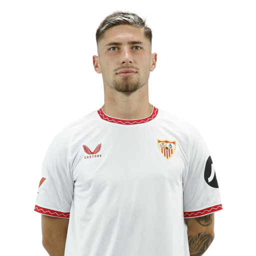
3 Adrià Pedrosa (TS)
4 Kike Salas (DC)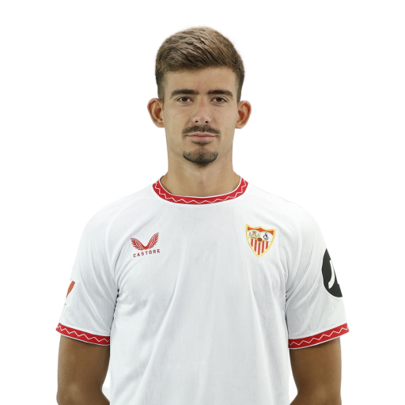
6 Nemanja Gudelj (DC)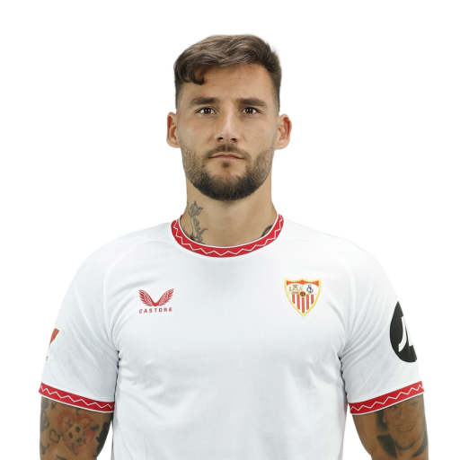
15 Gonzalo Montiel (TD)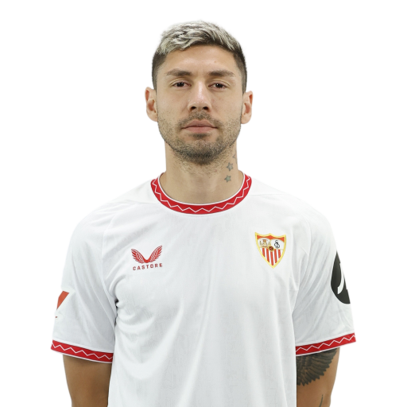
16 Jesús Navas (TD)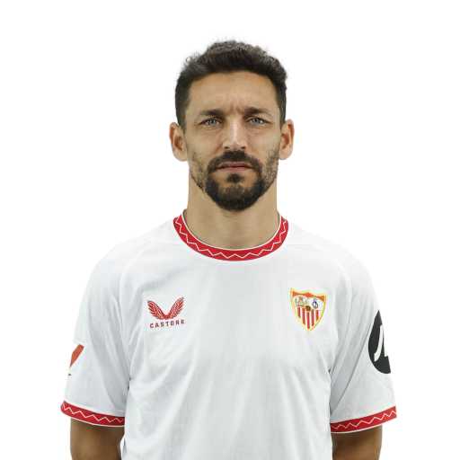
19 Valentín Barco (TS)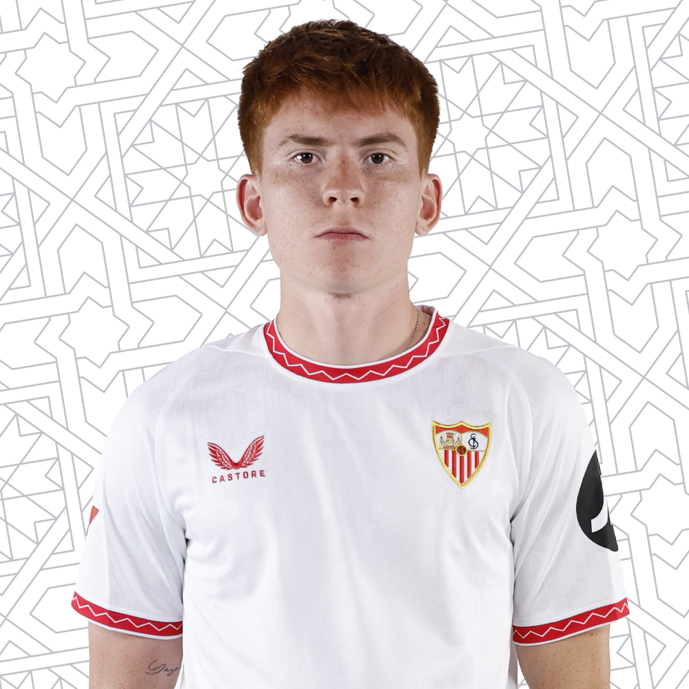
22 Loïc Badé (DC)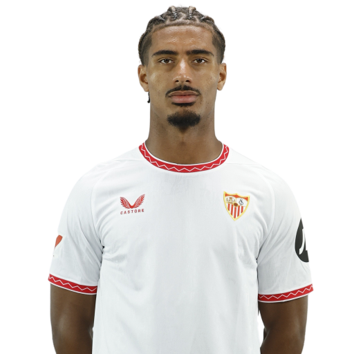
23 Marcão (DC)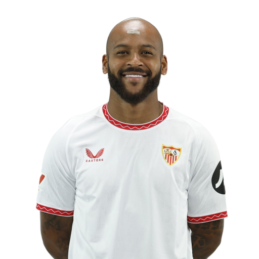
24 Tanguy Nianzou (DC)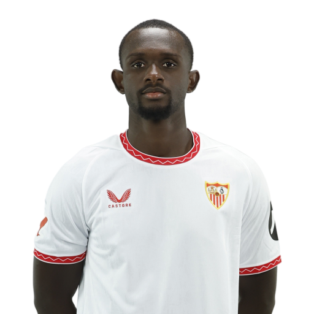
26 Juanlu Sánchez (TD)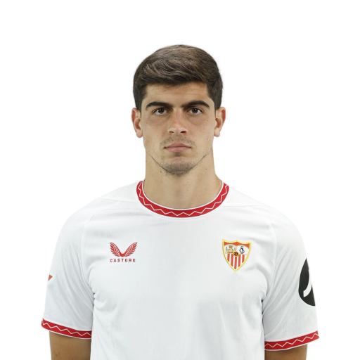
Centrocampisti
8 Pedro Ortiz (CC)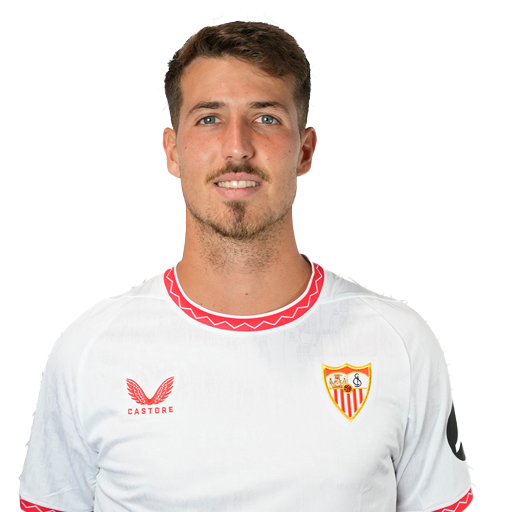
12 Albert Sambi Lokonga (CC)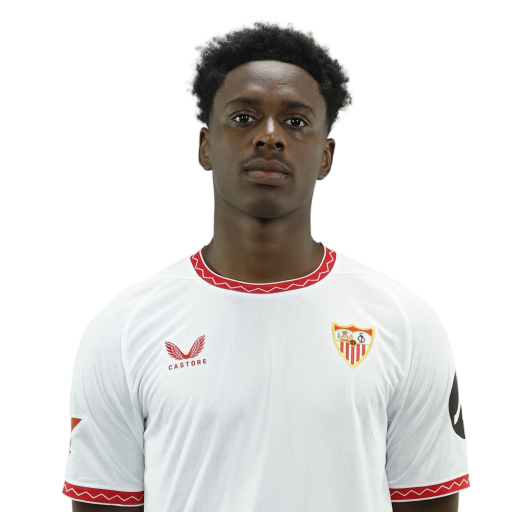
17 Saúl Ñíguez (CC)
18 Lucien Agoumé (CC)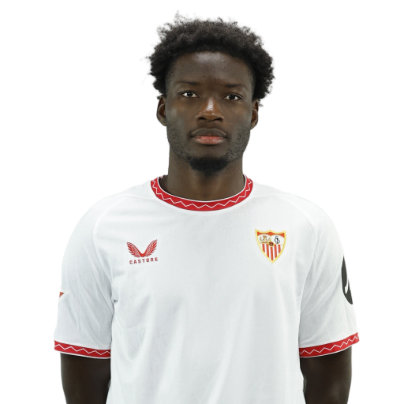
20 Djibril Sow (CC)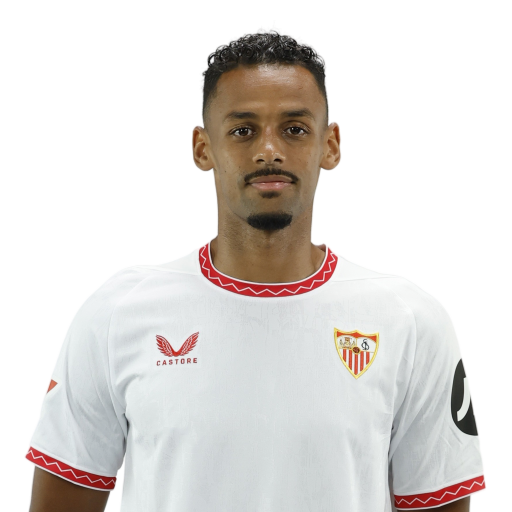
Attaccanti
5 Lucas Ocampos (AS)
7 Isaac Romero (AT)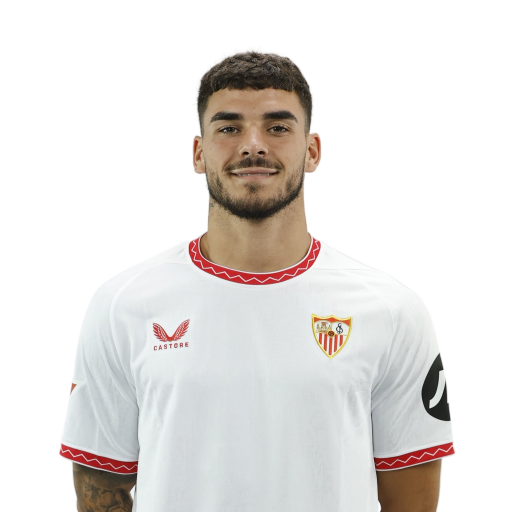
9 Kelechi Iheanacho (AT)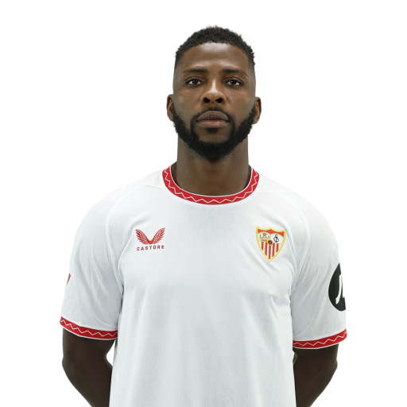
10 Suso (AD)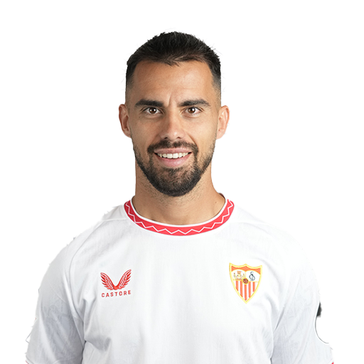
11 Dodi Lukébakio (AD)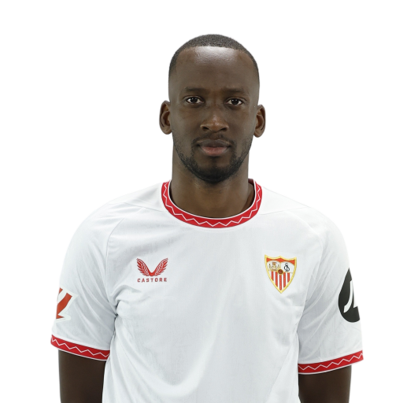
14 Peque Fernández (AT)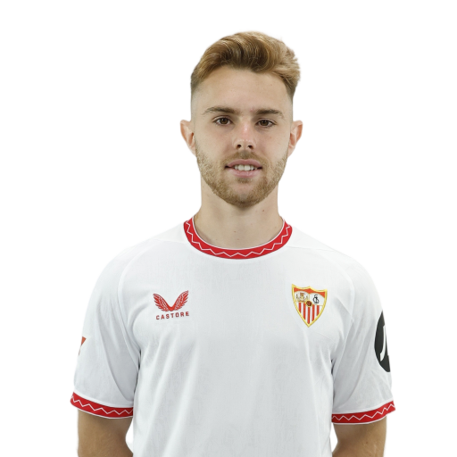
21 Chidera Ejuke (AS)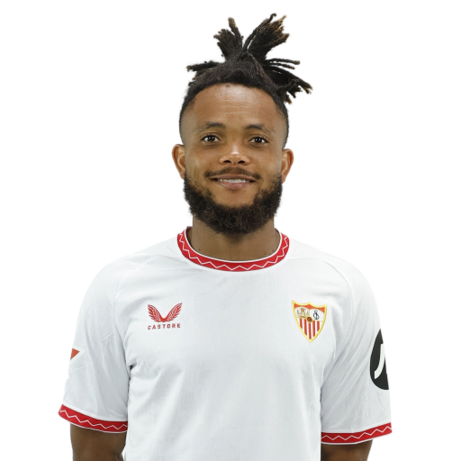